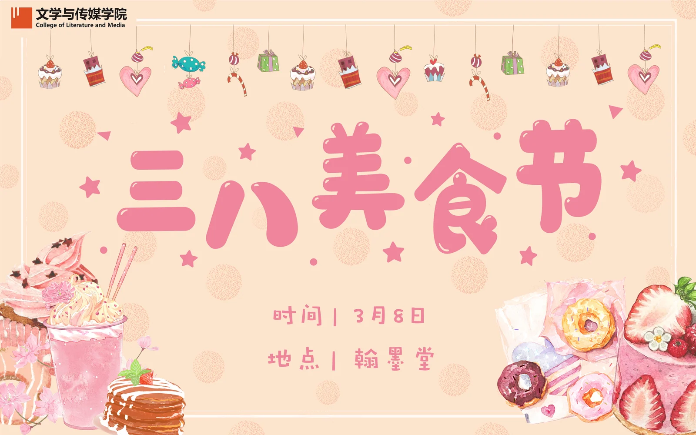
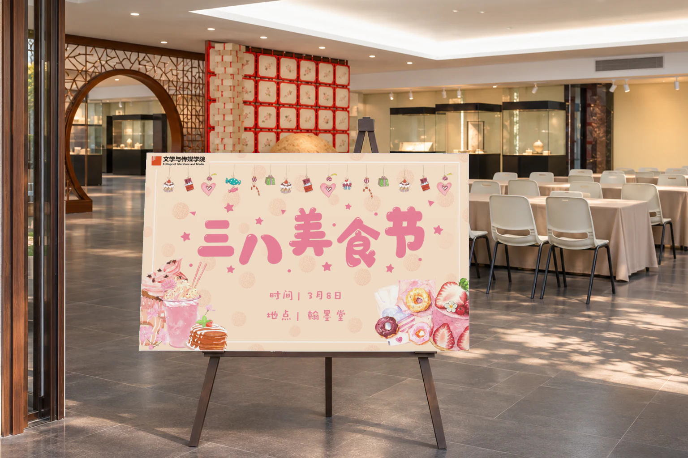

跳至主要内容
灵感展场
作品
Work
灵感展区
CHOOSE A HALL
01
包装设计
Packaging Design
当前
02
品牌设计
Brand Identity
当前
03
活动物料设计
Event Materials
当前
04
插画设计
Illustration
当前
05
海报设计
Poster Design
当前
查看全部作品
关于
About
联系
Contact
KALINA’S INSPIRATION GALLERY

活动通知
甜点插画围住日期和地点，传达活动信息。

翰墨堂 · 入口展架
项目介绍
Project Introduction
海报名称
三八美食节
举办单位
东莞理工学院文学与传媒学院
设计风格
粉杏色水彩甜点插画，搭配圆体标题与糖果挂饰